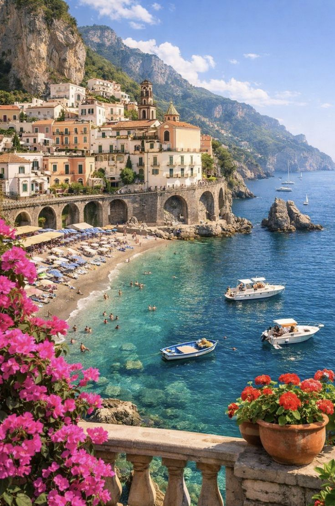
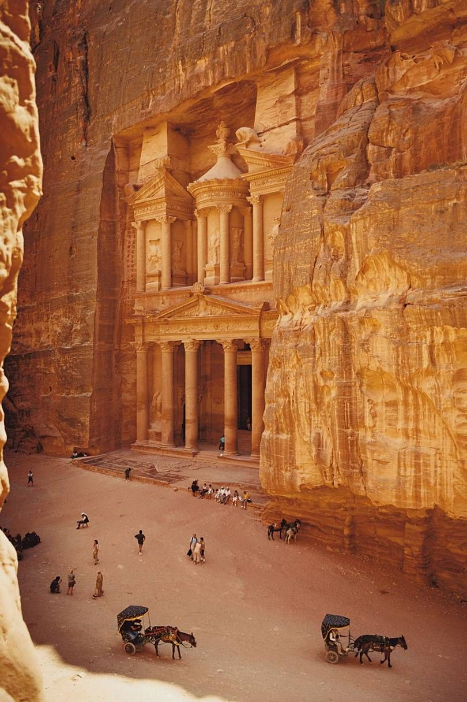
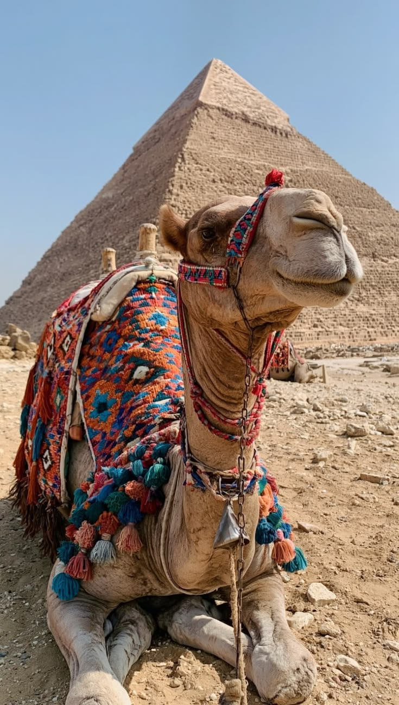
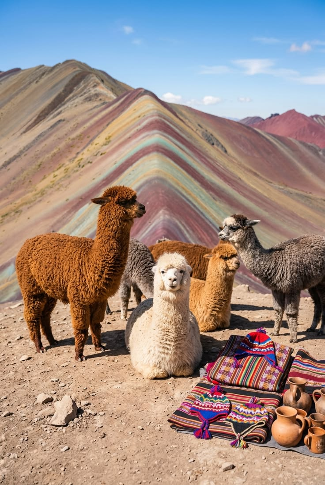
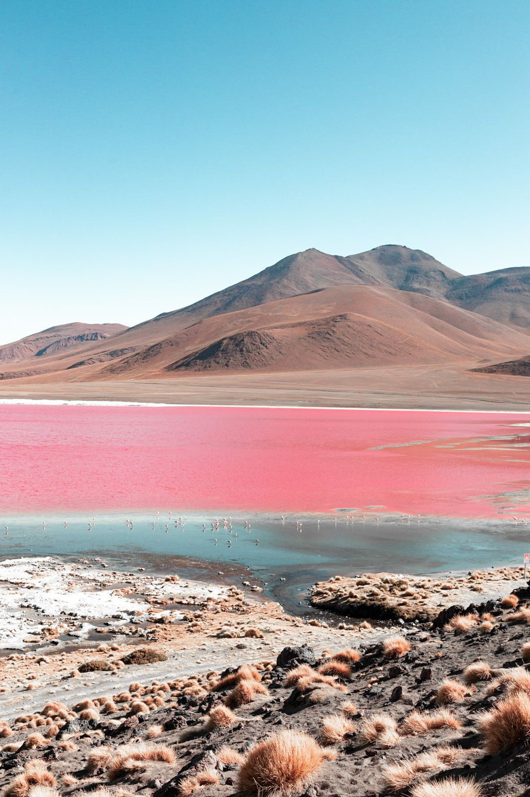
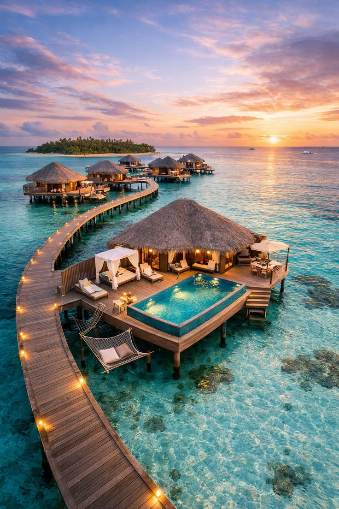
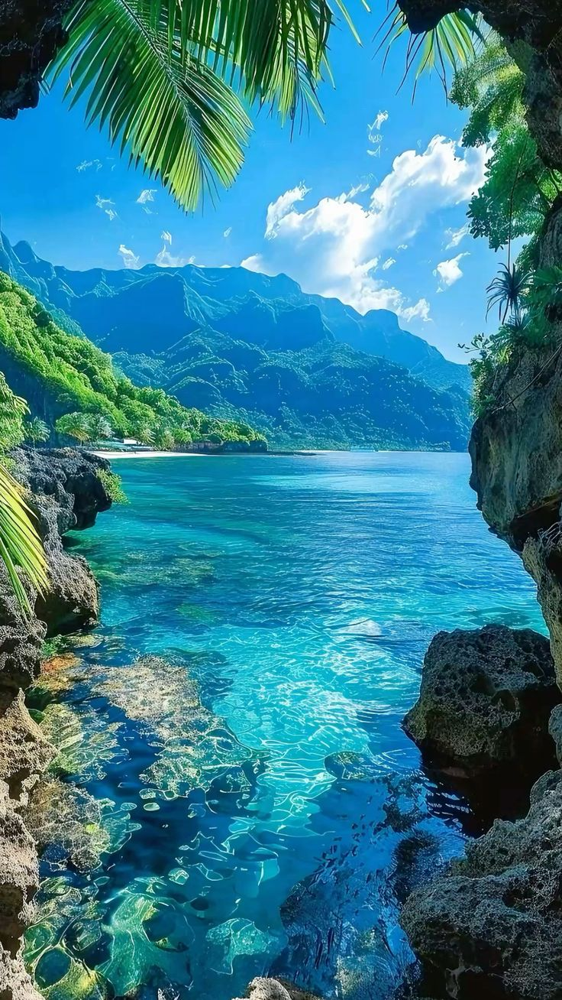

Life was never meant to be lived in one place. At Nomad & Bloom Travel, we believe travel is more than a destination — it's a state of soul. Whether you're chasing the golden light of a Moroccan medina, losing yourself in the misty peaks of Patagonia, or drifting through ancient cobblestone streets with nothing but a backpack and a curious heart, we craft journeys as unique as the spirit that drives you. So pack light, dream heavy, and let the road write your story. The world is calling. Are you ready to answer?
See Our OffersThe most searched destinations in 2026

Amalfi Coast & Cinque Terre

Petra & the Dead Sea

Pyramids & the Nile

Machu Picchu & the Andes

Salar de Uyuni Salt Flats

Coral Reefs & Crystal Waters

French Polynesia & Bora Bora
Every Nomad & Bloom trip starts with a conversation, not a catalog. We ask what you love, how you like to move through the world, and what you hope to feel when you finally arrive. Then we build an itinerary around you instead of squeezing you into a package.
We believe the best journeys leave room for wandering. Your days will include time to linger over a long lunch, follow a side street, or simply watch the light change. The famous sights are still on the map, but they are never the only thing on it.
Traveling well also means traveling kindly. We work with small local guides, family-run guesthouses, and neighborhood restaurants so that the money you spend stays in the communities that welcome you.
Here is what you can expect on every trip we plan:
Not sure where to begin? Browse the official Italian tourism site for inspiration, then head to our offers page to see how we can bring a journey to life.